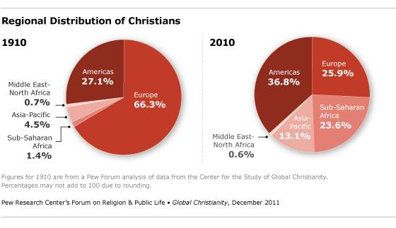

All Without Distinction?
One of the most common tactics used to attempt to contradict the many Bible verses that support universal salvation is to claim that the word “all” does not mean “all without exception” but instead “all without distinction.” I have lost count of the number of times I have read or heard this supposed “explanation” for why God will not save everyone even though He is “the Savior of all people” (1 Timothy 4:10) who is reconciling “all” to Himself (Colossians 1, 2 Corinthians 5) etc. This, however, is tantamount to saying that “all” actually means “some” and is therefore an invalid claim that simply seeks to redefine the word “all” to fit preconceived religious paradigms. In short, it is pure sophistry (fallacious, deceptive argumentation).
Keith DeRose, Yale professor of philosophy, summarizes this argument and his conclusion as follows:
Several people I’ve spoken with about our universalist passages had apparently been taught that “all” can mean “all without distinction” rather than “all without exception”. What exactly is “all” supposed to mean when it carries the former (“without distinction”) sense? Some seem to hold that it then means “some from each group”, and where it’s people that are involved, each group seems to mean each nation. For others, it means something a bit more: That every person, regardless of which group she’s in, has a chance.
But it’s clear that “all”, at least when used properly, never means anything like that.
When used properly, “all” never means “some from each group,” according to DeRose (and common sense/reason). In his explanation of why all cannot mean “all without distinction,” DeRose has a good analogy about a “slippery character” who attempts to use “all” in this way that shows this quite clearly (you can read it here). But rather than quote this analogy, I have another one.
Imagine that an incredibly powerful leader decides to form his own island nation with people from all over the world coming to populate it. This leader, who we will call King Bobo, has virtually unlimited resources and power. He is the sovereign, supreme leader of his land. At the start of this most remarkable nation, King Bobo makes the following proclamation:
“Loyal subjects, this day begins a new nation in which liberty, justice, and human rights will reign for all people. All will be treated with dignity and respect. All will be happy and well-fed. The finest medical facilities, procedures, and medicines will be freely available to all people in my land. As I live, I swear that this new nation will truly be a nation of liberty and justice for all!”
Everyone cheers the speech, confetti flies, the marching band plays, and so begins this great nation.
Now imagine several years later, the United Nations sends a representative to check out this country, only to find that the vast majority of its population is enslaved, malnourished, abused, exploited, sick, impoverished, and victimized. Human rights violations abound, government-sanctioned torture is common place, and King Bobo is directly responsible for all of it.
Naturally, the U.N. is concerned, creates a human rights panel, and investigates King Bobo. As part of the process, the king himself is called upon to defend himself before the panel. Imagine their dialogue:
U.N. guy: “King Bobo, your kingdom is full of human rights abuses. You swore at its inauguration that all people would be treated with dignity and respect, that all would have access to medical care, food, and basic necessities. You swore that all would have liberty, justice, and happiness. Yet, most of your subjects live in slavery, agony and need. You abuse, exploit, and torture them constantly. It is clear that you lied about your kingdom. Give us one good reason not to imprison you for crimes against humanity.”
King Bobo: “Your honor, I did not lie.”
U.N guy: “Have you been paying attention! Of course you lied!”
King Bobo: “Did not!”
U.N. guy: “Did too!”
[repeat childish banter several times]
King Bobo: “Did not! You see, when I said all people would receive all those good things, human rights and so on, blah, blah, blah, I meant “all without distinction.” So, I used the 1910 data on the Regional Distribution of Christians shown below to separate my population into groups according to their regions of origin: Europe, the Americas, Asia-Pacific, Middle East-North Africa, and Sub-Saharan Africa. Based on this data, I was sure to treat at least some people, at random from each of these groups with dignity and respect. So, for the European group for example, I had a random lottery of the whole population and 66.3% of that group received all of the benefits I promised. For the Middle Eastern-North African group, I did the same thing and 0.7% of that group received all of the benefits I promised, and so on for the other groups. So you see, all people did receive what I promised, all without distinction, that is. Can I go home now?”

Pie Chart retrieved from http://www.pewforum.org/2011/12/19/global-christianity-exec/ on 7/10/2018
[pause]
U.N. panel (all together): “That was a very persuasive argument King Bobo. You even have a pie chart! We had forgotten about the “all without distinction” loophole. I guess you really are a good king, who treats all people, that is “all people without distinction” very well in your kingdom. Keep up the good work.”
King Bobo: “Thank you, your honors, I knew you would see reason in this matter. If you need to find me again, I’ll be torturing some Middle Eastern and Asian peasants in my palace, for fun, because I can.”
This ridiculous scenario well-illustrates the patent nonsense of the “all without distinction” claim. “All without distinction” simply isn’t a thing. As DeRose aptly observes:
This won’t fly, precisely because “all” just can’t mean anything like what the “all without distinction” crowd says it sometimes means. My reaction, at least, is not that this fellow was being deceitful merely in using one sense of “all” while it has another good sense. He’s worse than that: There’s no good sense of “all” that would make true his miserable lie. No, “all”, when it’s used properly, always means all without exception. Quite simply, “all” means all.
You may now object, however, that “all” in the King Bobo analogy doesn’t mean “all people everywhere” but only those in King Bobo’s land. So, “all” doesn’t necessarily mean everyone in the universe. But don’t get too excited about a limited soteriology (view of salvation) yet. “All” still really does mean “all” not “some from each group (all without distinction).” To see why, let’s turn again to Dr. DeRose:
What’s going on here is that the quantifier phrases of natural language (“all”, “most”, “some”, etc.) are to be understood, on an occasion of use, relative to a contextually determined domain. Thus, when I say, “All the beer is warm”, the contextually determined domain is the things in this room, so “All the beer”, in context, means all the beer in this room. So there is some sense in which “all” doesn’t always mean all: On some occasions of use, “all” … means all … within a limited domain. But, relative to that domain, “all” really does mean all (without exception): My sentence “All the beer is warm” turns out to be false if there is some cold beer that I failed to notice in the room.
But when the domain is limited, there has to be some fairly clear clue as to what the limited domain is. When “all” is used in the New Testament, as in “For all have sinned and fallen short of the glory of God,” and similar passages, the “all”, I take it, refers to all people. It could possibly refer to some restricted class of people, but that suggestion is to be rejected, b/c (a) there is no such restricted class that clearly presents itself (all the people in this room?), (b) it’s incumbent on a speaker to make clear what the class is if he means for it to be specially restricted and no specially restricted class clearly presents itself given current conversational intents and purposes, and (c) the NT doesn’t specify any such specially restricted class. So, “All have sinned” means that all people have sinned, as almost all would agree.
But similarly for the “all”s of the universalist passages. No restricted class of people clearly presents itself, and the Biblical writers aren’t so incompetent as to mean some specially restricted class of people that doesn’t clearly present itself without specifying or somehow making it clear which class they mean. Indeed, in I Corinthians 15:22 and Romans 5:18, each of the relevant “all”s occur in the very same sentence (and a fairly short sentence, to boot) as an occurrence of “all” that seems to refer to the whole human race (given that it’s the whole human race that died/was condemned in Adam), so it would have been especially misleading or even incompetent for Paul to mean something less than the whole human race there, since that would involve switching the domains relative to which his claims should be interpreted without warning in the middle of a single sentence — and a sentence that seems to be stressing the parallelism between its two clauses, for that matter. So I see no reasonable alternative but to conclude that these “all”s refer to all people.
Thus, if a clearly limited context is described, I can use the term “all” to mean “all in this context.” So, for example, since King Bobo only has authority over his kingdom, he is only able to make human rights guarantees for people in his kingdom. In this case, the context is clearly limited to his kingdom over which he has authority. Of course, this begs the question: Over whom and over what does God have authority? Is he not the Lord of all, and does He not have authority over everything (without exception)? Didn’t Jesus say, in 17:2 that the Father had given Him “authority over all people.” Is God really “over all” (Ephesians 4:6) or is He only sovereign over some (all without distinction)?
As DeRose points out, if the biblical authors meant to restrict the word “all” to a particular limited context, they would have done so (but they did not). They are not “so incompetent as to mean some specially restricted class of people that doesn’t clearly present itself without specifying or somehow making it clear which class they mean.” Not only do they neglect to mention any specially restricted domain, the biblical writers explicitly tell us that the domain they are referring to is all-inclusive. Consider the following examples:
Romans 5:18
Therefore, as one trespass led to condemnation for all men, so one act of righteousness leads to justification and life for all men.
1 Corinthians 15:22
For as in Adam all die, so also in Christ shall all be made alive.
These are the two verses that Keith DeRose discussed above. He is right to point out that both of these short single-sentence verses exhibit clearly parallel clauses in which the first clause really means all people. It is strange indeed to interpret the first clause as “all without exception” (which is certainly how it is interpreted by most Christians who believe that all mankind is condemned to die in Adam), but the second parallel clause as “all without distinction.” A mid-sentence switch in scope without any warning or contextual clues, would indeed be “misleading or even incompetent” especially since the sentences are “stressing the parallelism between [their] two clauses.” Thus, if Adam’s sin led to condemnation and death for all people, Christ’s sacrifice necessarily leads to justification and life for all people. If we deny that one means everyone, we must logically deny that the other means everyone.
Colossians 1:15-20
The Son is the image of the invisible God, the firstborn over all creation. For in him all things were created: things in heaven and on earth, visible and invisible, whether thrones or powers or rulers or authorities; all things have been created through him and for him. He is before all things, and in him all things hold together. And he is the head of the body, the church; he is the beginning and the firstborn from among the dead, so that in everything he might have the supremacy. For God was pleased to have all his fullness dwell in him, and through him to reconcile to himself all things, whether things on earth or things in heaven, by making peace through his blood, shed on the cross .
Notice that “all things” includes everything (in heaven, on earth, visible, invisible etc.) and that Paul makes this emphatically clear. It is the same ”all things” that He created that He is reconciling to Himself by making peace through his blood, shed on the cross. Are we to honestly believe that He created “all things without distinction” rather than literally all things? If Paul means that God literally created all things in Christ, it is inevitable that he is “to reconcile to himself” those same created things through Him.
Ephesians 1:8-10
With all wisdom and understanding, he made known to us the mystery of his will according to his good pleasure, which he purposed in Christ, to be put into effect when the times reach their fulfillment— to bring unity to all things in heaven and on earth under Christ.
Again, the contextual domain is all things in heaven and on earth. So, this clearly includes everything since there is no other place. But in case you feel all things in heaven and on earth is not specific enough, other verses go into more detail:
Revelation 5:13
Then I heard every creature in heaven and on earth and under the earth and on the sea, and all that is in them , saying:
“To him who sits on the throne and to the Lamb
be praise and honor and glory and power,
for ever and ever!”
Here, it is even more specific that all creatures everywhere will worship Jesus, the Lamb of God. The contextual domain includes “every creature in heaven and on earth and under the earth and on the sea, and all that is in them,” which adds “under the earth” and “on the sea” and “all that is in them” to clarify unambiguously that all means all, not just some. Every creature in every place the author can think of. ALL.
Philippians 2:9-11
Therefore God has highly exalted him and bestowed on him the name that is above every name, so that at the name of Jesus every knee should bow, in heaven and on earth and under the earth, and every tongue confess that Jesus Christ is Lord, to the glory of God the Father.
The contextual domain is, again, very clearly universal as he is referring to everyone in heaven and on earth and under the earth. All of the uses of the word “every” italicized above are inflections of the same Greek word translated as “all” in our other passages: pas (πᾶς, Strong’s # 3956). As a reminder, inflections do not change the meaning of the word, but rather simply make the word fit grammatically in the sentence. The Greek words for “bow” and “confess” are very clearly describing wholehearted worship, as we have already discussed. It is simply absurd to suggest that Jesus name is above “every type of name without distinction” and that “every type of knee without distinction” will bow, and that “every type of tongue without distinction” will confess. Jesus’ name is not really above every name, but rather just above every type of name? What are these alleged “types of names” or “types of knees” or “types of tongues?” Clearly, every individual, everywhere is in view. Paul is being about as clear as he could possibly be about his contextual domain: it is universal, including all people everywhere.
Romans 3:23
for all have sinned and fall short of the glory of God,…
Answer the following question: Does this verse refer to all people without exception or all people without distinction? As a reminder, here is what is meant by these terms:
Option 1: All people without exception
This means that every person has sinned and falls short of the glory of God (excluding Jesus himself). There are no perfect, sinless people; all people without exception sin.
Option 2: All people without distinction
This means that at least some people from each group of people have sinned and fall short of the glory of God. Not every individual has sinned. Some people from each group have, but there are also sinless individuals in each group who have not fallen short of God’s glory.
Which is it? Option 1 or Option 2? Is it really all people, or only some?
Commit to your answer.
I am betting that you chose option 1 (all without exception). Everyone has sinned and fallen short of God’s glory. If you did not, I am wondering who you know that I don’t, because they must be pretty amazing (having never sinned and having attained the glory of God). So, I’ll just assume that pretty much everyone believes that all people without exception have sinned and fallen short of God’s glory.
But here’s the kicker. Romans 3:23 is not actually a full sentence. More of the sentence continues in Romans 3:24. Here they are together:
Romans 3:23-24
for all have sinned and fall short of the glory of God, and are justified by his grace as a gift, through the redemption that is in Christ Jesus, …
Here’s the really important thing to notice: the “all” refers to every person without exception! Everyone has sinned and everyone is justified by his grace as a gift. It is the same “all” that serves as the subject for both clauses since the word “all” only occurs once in the original Greek. If all without exception have sinned and fallen short, all without exception are justified by his grace as a gift, since the exact same people are being referred to by “all.” If we insist on universal sin, we must also insist on universal justification as a gift. You cannot grammatically or logically divide Romans 3:23 and 3:24 as if they refer to two separate groups of people; they are one and the same.
Are There Different Greek Words that Mean the Different “Types of All”?
I think that the assumption that there is a special Greek word for “all without distinction” as compared to “all without exception” is probably a common misconception among those who have not studied Greek. The fact is that there is only one word being used in all these passages. It is pas (πᾶς, Strong’s # 3956), as we mentioned before. It is impossible to consistently interpret “all” as “all without distinction” and have it be a worthwhile word. If we interpret “all” this way, it gives us no assurance of salvation even for believers. Verses like Acts 2:21, which says that “everyone (pas) who calls upon the name of the Lord shall be saved” end up meaning that “at least some people who call upon the Lord from each group of people will be saved.” So, some Gentiles who call upon the Lord will be saved and some Jews who call upon the Lord will be saved, but not all people without exception who call upon the Lord will be saved. For all we know, only one Jewish person and one Gentile are actually saved, since this fulfills the condition of the “all without distinction” view that at least someone from each “group” has to make it. And how do we determine what constitutes a group anyway? Is it race, ethnicity, age, socioeconomic status, eye color, religion, dental health, or what? This introduces an incredible amount of ambiguity to a very simple, clear word.
So, since a consistent interpretation is not possible, what is being done is a metaphorical sleight of hand. The theologian who wishes to redefine “all” to mean “all without distinction” is arbitrarily deciding when to use each “definition.” So, if the verse is about condemnation, death, sin, or anything negative, “all” means “all without exception.” If, however, it is about being made alive, reconciled, saved, or united in Christ or anything positive, then “all” means “all without distinction.” This is nothing short of smoke and mirrors, a deceptive illusion that can be manipulated however it is most convenient for retaining one’s theological system and ignoring any verses that don’t fit.
In Mere Christianity, C.S. Lewis aptly observes the tendency to redefine a word that has a clear meaning in such a way that the word’s meaning is lost, at which point it becomes virtually useless. This is precisely what is being attempted with the word “all” in the current theological landscape. If “all” really means “some” then why have the word “all” at all. It becomes meaningless. Of course, it was not meaningless when the biblical writers used it, and no amount of sophistry or smoke and mirrors can change that.
Previous Chapter Next Chapter
Citations
DeRose, Keith. Universalism and the Bible: The Really Good News. http://campuspress.yale.edu/keithderose/1129-2/#3. Last retrieved 7/11/2018